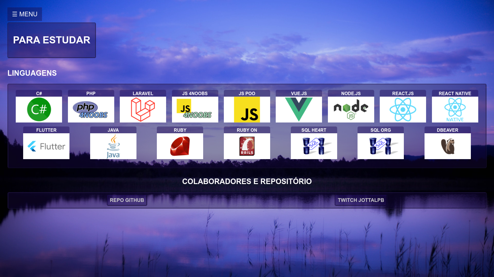
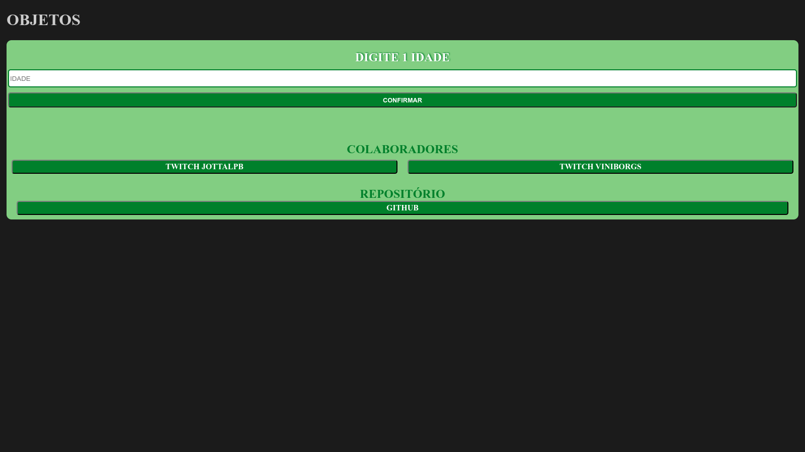
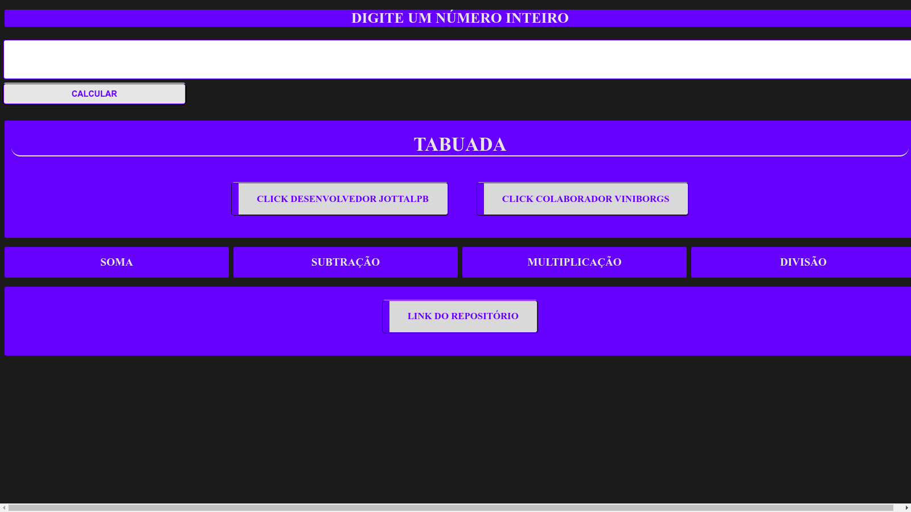

×
INÍCIO
CANAIS
CODAR
CONTATOS
DOAR
☰ MENU
SITE DE CONTATOS E CANAIS P/ REACT
Clique no menu acima para acessar as outras páginas.
PROJETOS
SITE DA LIVE

ESTUDOS JS

TABuada JS

COLABORADORES E REPOSITÓRIO
REPO GITHUB
TWITCH JOTTALPB